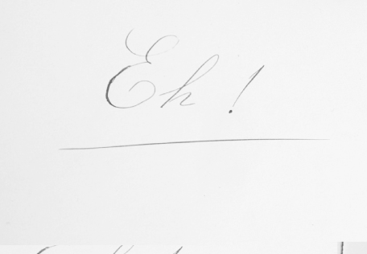

Editor. Rufino José Cuervo cuidó muchas ediciones, empezando por su propia producción. Vale señalar la corrección de las pruebas, la identificación de autores y obras, las referencias acertadas, los prólogos, los índices etc. Las Notas a la gramática castellana de don Andrés Bello, es tal vez una de sus actividades editoriales más reconocidas. La obra de Bello ganó no solo la elegancia editorial que tan importante obra merecía, sino también ganó muchísimo con la inclusión de los índices, pero sobre todo en la parte doctrinal con las notas, de tal manera que la obra pasó de ser de un solo autor, a pertenecer al binomio con que se enuncia en varias ocasiones: Bello y Cuervo.
Elogio a Bello. La Gramática de Andrés Bello acompañó constantemente los estudios de Cuervo, por ello logró catorce ediciones de sus Notas. En la introducción confiesa: “Habiendo yo estudiado esta gramática en el colegio, y tenídola después constantemente a la mano, si algo notable he encontrado en mis lecturas, luego se lo he anotado al margen; al extender esas anotaciones, solo me propongo dar un testimonio del respeto que siempre he profesado al autor, al propio tiempo que de admiración a su ciencia y de gratitud por la utilidad de que me han sido sus lecciones”[1].
Empleo ad honorem. Cuervo tenía repugnancia a desempeñar cargos públicos; en varias ocasiones se los ofrecieron y cortésmente los rechazó. Pero había algo superior a su aversión por los puestos públicos: su caridad para con los pobres. Dos meses antes de su muerte, solicitó un empleo ad honorem en la legación colombiana en París, para que le confieran la inmunidad diplomática y el fisco francés no cobrara los derechos de su testamentaría que “defraudará a los pobres de Bogotá [sus herederos] de parte de lo que les corresponde”[2]. En efecto, sus bienes pasaron a la Beneficencia de Cundinamarca. En el Hospital de la Hortúa “San Juan de Dios” se encontraba y ojalá se mantenga un gran medallón con la efigie de Rufino José Cuervo, en reconocimiento por sus aportes.
Epistolario. Los veintitrés tomos del Archivo Epistolar Colombiano –editado por el Instituto Caro y Cuervo desde 1965– que recogen la correspondencia de Rufino José Cuervo desde la década de 1860 hasta poco antes de su muerte dan una idea aproximada de la importancia de las cartas en la evolución del trabajo de este bogotano. Gracias a la esmerada construcción de una amplia y densa red de corresponsales en Estados Unidos, América Latina y los principales centros universitarios y culturales europeos, Cuervo logró difundir los resultados de sus investigaciones y nutrir su trabajo a través del intercambio intelectual con diferentes miembros de una gran comunidad de literatos, filólogos y lingüistas que él también contribuiría a dinamizar. La gran aceptación que recibieron sus publicaciones y el importante lugar que ocupó en la lingüística y la filología del siglo XIX se debieron, en gran parte, a esta red epistolar y a su acertado aprovechamiento por parte de Cuervo.
Español de América. Sobre la discusión de cuál fue la base lingüística que conformó el español de América, Cuervo parece apoyar la tesis formulada por Wagner en 1949, explicando cuál fue el nivel de habla predominante en los primeros colonizadores españoles. Para Cuervo (como para Wagner), hubo un predominio del nivel vulgar o popular de habla, como puede verse en la siguiente cita: “Por otra parte, en los primeros pobladores y en la inmigración sucesiva abundó evidentemente el elemento popular, de donde proviene que aun entre la gente decente se prefieren a veces términos menos delicados en detrimento de otros, según lo apunta el mismo Juan de Arona, citando como ejemplos: candela por fuego, colorado por rojo, plata por dinero, pila por fuente, barriga por vientre, pelo por cabello, cáscara por corteza, cachete por mejilla, palo por madera, pellejo por piel, patada por coz, patear por cocear, etc.”[3]. En contra de esta afirmación, Rosenblat sostiene que en la conquista y colonización de América hubo un relativo predominio de gentes de los sectores medios y altos de la Península.
Esperando la muerte. En 1911, Cuervo había llegado al ocaso. Su amigo, el médico Juan Evangelista Manrique, le proponía la intervención quirúrgica o un tratamiento más activo para aliviar las dolencias de la última enfermedad. Cuervo le contestaba: “Es inútil, mi noble amigo, que pretendamos hacerle trampas a la muerte. El supremo juez me ha emplazado para presentarme ante su tribunal y no puedo faltar a la cita. Mis horas están contadas y no puedo perder en inútiles quites a la tumba el tiempo que necesito para prepararme y poderme presentar correctamente ante el trono de Dios”[4].
Estatua de Cuervo. En la calle décima entre carreras sexta y séptima, frente a la iglesia de San Ignacio, se encuentra la plazoleta que llevaba el mismo nombre de la iglesia, pero que antes se denominaba Plazoleta de San Carlos, por su vecindad con el Palacio de la Cancillería. En medio de un diminuto remanso de paz, dentro del ruidoso centro histórico de Bogotá, se yergue monumental una estatua de R. J. Cuervo. El Congreso de la República de Colombia ordenó estos honores en bronce ante la muerte del gran conciudadano, por la ley 1ª de 1911. Hoy la plazoleta se denomina “Rufino José Cuervo”. Gómez Restrepo en la inauguración de la estatua, el día 18 de julio de 1914, decía: “Hoy se cumplen tres años del día infausto para la patria, en que rindió su vida en París don Rufino José Cuervo. Y el gobierno ha querido dar, en esta ocasión, público testimonio de que la nación no olvida a su grande hombre, y antes bien, procura que su noble fisonomía siga siendo familiar para las nuevas generaciones, que no lo conocieron en la modestia de su vida, sino en la transfiguración de la gloria póstuma”[5].
Estilo de Cuervo. Gómez Restrepo advierte que “El estilo del señor Cuervo tiene esa suprema sencillez, llena de elegancia, a que sólo pueden aspirar los escritores próceres. Su palabra era exacta expresión del pensamiento, y este se movía, con porte señorial, en los amplios períodos, feliz unión del estilo clásico y del giro moderno. Cuando lee uno la introducción al Diccionario o el prólogo de las Apuntaciones le parece ver dilatarse el curso de uno de esos magnos ríos, de aguas serenas, no enturbiadas por el tributo tumultuario de corrientes impuras, y que en su majestuoso giro fecundizan la tierra, copian las sinuosidades del camino y reflejan el esplendor del cielo”[6].
Estructura de la monografía. Toda monografía en el Diccionario de Cuervo cuenta con la entrada, la categoría léxica y la parte informativa acerca del vocablo estudiado. La parte informativa se compone tanto del estudio semántico sintáctico y la respectiva ejemplificación como de la etimología. Además de estos apartados, que son obligatorios, hay otros de carácter potestativo cuya aparición depende de las necesidades concretas de cada artículo, a saber: una introducción, el período anteclásico, los testimonios latino-hispánicos, las particularidades morfológicas, ortográficas o prosódicas, y, por último, un índice de construcciones.
Estudio científico del lenguaje. De referente adicional en materia gramatical a criterio último para el análisis de la lengua la “ciencia del lenguaje” constituyó el eje central del trabajo de Cuervo en las diferentes etapas de su producción lingüística y filológica. Mientras que en España dominaba una celosa tradición prescriptiva y normativa empeñada en perpetuar el monopolio de la rae en materia glotopolítica, el análisis histórico-comparativo de la lengua iba ocupando un lugar cada vez más protagónico en los escritos de Cuervo, desde sus primeros escritos a finales de los 1860. El sólido andamiaje empírico, teórico y metodológico sobre el cual construyó su concepción del lenguaje le serviría de arma, a principios del siglo XX, para reivindicar la autonomía lingüística y cultural hispanoamericana frente a las nostálgicas pretensiones hegemónicas del recién desaparecido imperio español defendidas por Juan Valera.
Etimología. La etimología es un aspecto muy importante en el Diccionario de Cuervo porque es la base para la organización semántica de cada una de las monografías, por esto es un apartado obligatorio en cada una de ellas. Generalmente el autor, siguiendo el método histórico comparativo, muestra el origen, su formación española o su procedencia y luego presenta los cognados, esto es las formas comunes en las lenguas romances. En muchas ocasiones este apartado es demasiado breve, lo que causó la crítica de Pedro Urbano González de la Calle, sin embargo toda la monografía es la que da sentido completo a la breve exposición que se hace en este apartado.
Exequias. El 17 de julio de 1911 Rufino José Cuervo muere a los sesenta y siete años de edad. Las exequias fueron, por su propia voluntad, humildes a más no poder, y no quiso que se aceptaran para ellas ni discursos ni coronas. Se celebraron en la iglesia de San Francisco Javier y tras el féretro, seguido en primer término por la buena y fiel Marie Joseph Bonté, iba un grupo reducidísimo de amigos. Sus restos mortales reposan en París, en el cementerio del Père Lachaise. Al decir de Monseñor Romero, un cristiano como don Rufino, que había meditado muchas veces aquellas palabras de Kempis: “Bienaventurado el que tiene siempre la hora de la muerte delante de sus ojos, y se dispone cada día a morir”; un hombre que había vivido: “Contemplando / cómo se pasa la vida/ cómo se viene la muerte/ tan callando” la espero con la entereza de los buenos.
* * *
[1] Anuario, xi, 221.
[2] aec, vi, 148-149.
[3] Cuervo citado por J. J. Montes, 1995, 146.
[4] Anuario, xi, 174.
[5] Anuario, iv, **
[6] Anuario, xi, 171.
